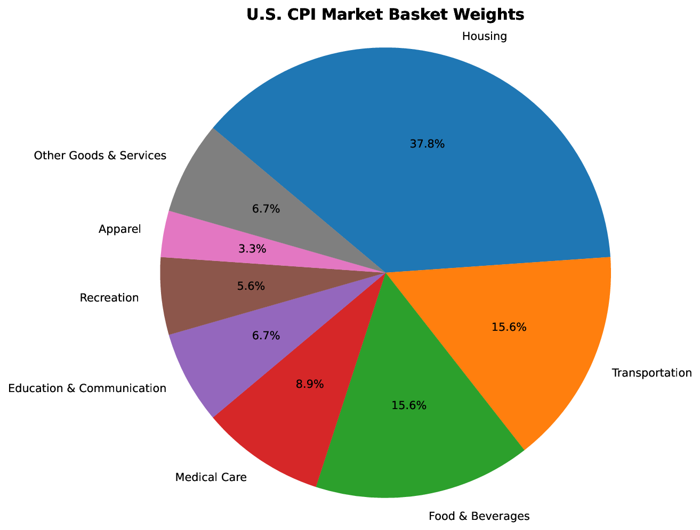

By the end of this unit I should be able to:
- Define inflation and deflation.
- Know what the CPI is and how it is calculated.
- Know what the GDP deflator is and how it is calculated.
- Understand the differences between the CPI, GDP deflator, and PCE deflator.
- Discuss what is included and not included in core inflation and we use core inflation.
- Understand where inflation comes from in the long-run.
- Articulate the relationship between the interest rate and inflation rate.
- Understand the costs of inflation.
What is Inflation and How is it Measured?
- : an overall increase in prices
- This is typically measured using the level, which is effectively the level of prices in the economy.
![Line chart of the U.S. year-over-year CPI inflation rate from 1960 to 2025, with recessions shaded. Inflation sits near 1 to 2 percent through the early 1960s, climbs through the late 1960s, and peaks twice in the 1970s at about 11.7 percent in 1975 and about 14.4 percent in 1980. It falls sharply in the early 1980s and then stays mostly between 1 and 4 percent for four decades, dipping just below zero in 2009 and again in 2015, before spiking to about 9 percent in 2022 and easing back to about 2 percent by 2025. The rate is almost always positive: prices usually rise, and what changes is how fast.](../../../../assets/figures/unit-05/us_inflation_rate_with_recessions.png)
Inflation in the United States Over Time - This does mean that when we are experiencing inflation, price must go up.
- It is fairly common to see some individual prices even when there is inflation.
![Line chart from Our World in Data showing the percentage price change of selected U.S. consumer goods and services since 1997, from the CPI. Some prices rose far faster than average: college tuition and fees are up about 210 percent, tuition, school fees and childcare about 195 percent, medical care about 135 percent, and household energy, food and beverages and housing each about 100 to 125 percent. Others fell outright: televisions are down about 99 percent, toys and computer software and accessories each down about 75 percent, and clothing is roughly flat to slightly below its 1997 level. Individual prices move in both directions even though the overall price level rose.](../../../../assets/figures/unit-05/price-changes-consumer-goods-services-united-states.png)
Price changes for selected goods
- It is fairly common to see some individual prices even when there is inflation.
- This is typically measured using the level, which is effectively the level of prices in the economy.
How Do We Measure Inflation
The Consumer Price Index
- Price Index (CPI): A price index computed each month by the Bureau of Labor Statistics using a bundle that is meant to represent the "market basket" purchased monthly by the typical urban consumer.
- This is a of the price level in the economy relative to the prices in a year.

CPI Market Basket Weights
- This is a of the price level in the economy relative to the prices in a year.
- To calculate the CPI, every month the collects data on the of all items in the basket and computes the of the basket.
- The formula to calculate the CPI is CPI =×(Cost of the basket inperiod) ÷ (Cost of the basket in theperiod)
ExampleExample: Calculating the CPI and Inflation
Suppose the typical urban consumer buys the following basket over the course of a year. We let 2023 be the base year, so the 2023 quantities make up the basket.
| Good | Symbol | ||||
|---|---|---|---|---|---|
| Rent (months) | 12 | $1,200 | $1,260 | $1,320 | |
| Gasoline (gallons) | 500 | $4.00 | $4.40 | $4.20 | |
| Food (grocery trips) | 400 | $10.00 | $11.00 | $12.00 | |
| Entertainment (tickets) | 20 | $50.00 | $52.00 | $56.00 |
Step 1: of the basket in each year
Remember: use the base-year quantities in every calculation, and the current-year prices for the year you are looking at.
Figure 1 — One fixed basket, priced three years running
Figure description loading.
Step 2: Calculate the in each year
Note that the CPI in the base year is always .
Step 3: Calculate the rate
| Year | Cost of basket | CPI | Inflation rate |
|---|---|---|---|
| 2023 | |||
| 2024 | |||
| 2025 |
Figure 2 — The CPI is a level; inflation is the rate it changes at
Figure description loading.
- Potential Problems with the CPI
- Bias
- The CPI uses fixed baskets, so it cannot reflect consumers' ability to toward goods whose relative prices have fallen.
- Introduction of Goods
- The introduction of new goods makes consumers off and, in effect, increases the value of the dollar. But it does not the CPI because the CPI uses fixed baskets.
- Unmeasured changes in
- Quality improvements the value of the dollar but are often fully measured.
- Bias
GDP Deflator
- Another measure of the price level is the GDP deflator: GDP Deflator =×(GDP) ÷ (GDP)
ExampleExample: Calculating Inflation with the GDP Deflator
- Suppose we have the following economy:
Real and Nominal GDP with two goods across two years Good NGDP (2024) RGDP (2024) NGDP (2025) RGDP (2025) Apples 500 $2 $1000 $1000 600 $3 $1800 $1200 Orange BMWs 3 $20,000 $60,000 $60,000 4 $25,000 $100,000 $80,000 GDP $61,000 $61,000 $101,800 $81,200 - In this example 2024 is the base year.
- Calculate the GDP Deflator (divide GDP by GDP) and find inflation
CPI vs. GDP Deflator
- Prices of capital goods
- in GDP deflator (if produced domestically)
- from CPI
- Prices of imported consumer goods
- in the CPI
- from GDP deflator
- The basket of goods
- CPI:
- GDP deflator: every year.
Another option: The PCE Deflator
- Another measure of the price level: personal expenditures (PCE) deflator, the ratio of to consumer spending (C)
- How the PCE is like the CPI
- only includes spending
- includes consumer goods.
- How the PCE is like the GDP deflator
- the "basket" over time.
- The Federal Reserves prefers
- The reason the Fed prefers the is that it has the positive attributes of both (it includes only consumer spending) and the GDP (the basket changes over time).
![Line chart comparing three U.S. inflation measures from 1960 to 2025: the CPI, the GDP deflator and the PCE price index, with recessions shaded. All three trace the same history — low in the 1960s, two peaks in the 1970s, a fall in the early 1980s, four decades near 2 percent, and a spike in 2022 — but they do not agree year to year. The CPI runs highest at the peaks, reaching about 14.4 percent in 1980 against about 9.5 percent for the GDP deflator and about 11.3 percent for the PCE. The PCE usually sits between the other two. The gaps are the differences in what each one measures.](../../../../assets/figures/unit-05/inflation_cpi_gdpdeflator_pce.png)
Core Inflation
- The prices of food and energy tend to be fairly .
- Since they make up a considerable of the CPI basket, this can create in our measure of inflation.
- As a result, economist use something called Inflation, which the prices of food and energy.
![Line chart of U.S. headline CPI inflation against core inflation, which excludes food and energy, from 1960 to 2025, with recessions shaded. Core inflation follows the same path but is visibly smoother: headline inflation swings above and below it repeatedly, falling to about minus 1.6 percent in 2009 and to about zero in 2015 while core stayed near 1.5 to 2 percent, and rising to about 9 percent in 2022 while core peaked near 6.6 percent. Food and energy prices are what make the headline number jump around.](../../../../assets/figures/unit-05/headline_vs_core_inflation.png)
Where Does Inflation Come From in the Long-Run?
- In the long-run, inflation comes from increases in the supply of money.
ExampleExample: Spending Money
- Suppose the economy has 100 goods to sell and the money supply is (and each dollar is spent exactly once). This would imply that the average price of each good had to be:
- If the money supply increased to (again each dollar is spent once), the average price would rise to:
- Now if output had risen to when the money supply increased, the price level would have stayed the same:
- Increasing the amount of money people have, increases the amount they want to buy, and if the number of goods doesn't increase, prices will.
- If money and output increase at the same rate, prices will stay the same (on average)
Figure 3 — What the money buys: P = M ÷ Y
Figure description loading.
- In economics, we have an equation that describes this relationship called the quantity equation:
Inflation and Interest Rates
- Suppose that your savings account has an annual interest rate of and you deposit into your account.
- A year from now you have , are you richer than you were a year ago?
- It on the rate
- If the inflation rate was over the last year, goods that cost a year ago now cost .
- So you are only richer in this case.
- The interest rate that the bank pays is called the interest rate, and the increase in your purchasing power is called the interest rate.
The Social Costs of Inflation
The Costs of Expected Inflation
- Inflation makes it costly to hold money (it is losing value because prices are going up).
- The inconvenience of reducing money holding is called the leather cost of inflation.
- costs are the costs of changing prices.
- Tax laws may tax inflation because they do account for changes in prices. i.e. stocks.
The Costs of Unexpected Inflation
- Borrowers and Lenders
- Unexpectedly inflation borrowers and lenders because the borrower pays back in valuable dollars.
- Pensions
- People on fixed pensions are by unexpectedly inflation.
- They receive a retirement payment, but the cost of living is .
The Costs of Deflation
- Costs of deflation
- Spending gets
- Debt burden in terms
- Monetary Policy becomes effective (we will see this later in the class).
- Wages are hard to .
- Profits
- Falling prices revenue but costs are incurred ahead of time (so they stay the ).
Accessibility accommodation: If you have an official ADA
accommodation and are having difficulty using this page, please contact your
professor directly to request alternative materials.